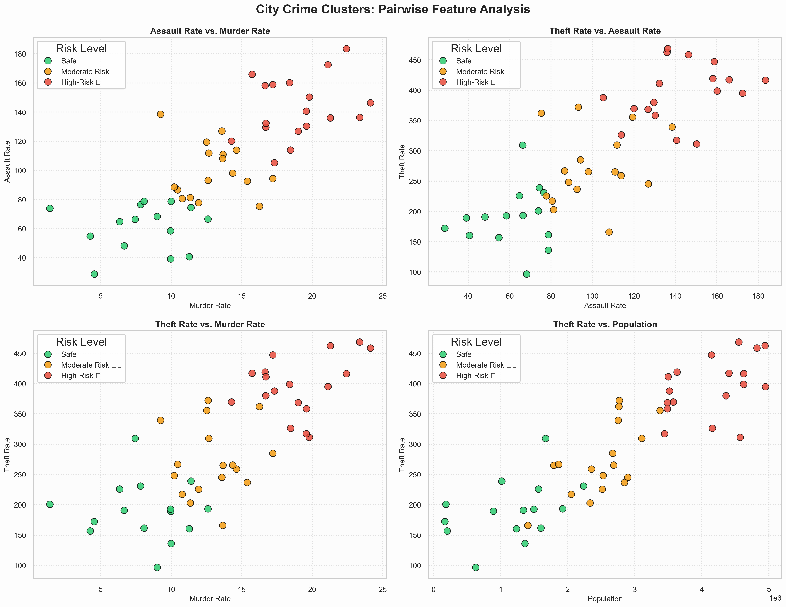

Urban risk,
mapped with
machine precision
K-Means clustering across 50 Pakistani municipalities surfaces high-risk jurisdictions before crises emerge — delivering statistical rigor to policymakers.
Urban classification
at a glance
Pipeline analytics
& cluster projections
Pipeline Diagnostic Visualizations
Feature density distributions, Pearson covariance heatmaps, Within-Cluster Sum-of-Squares (Elbow) curves, and K-Means spatial projections — each output validates a stage of the pipeline.

Jurisdiction
risk profiles
Lowest Risk Profiles
Top 5 municipalities with minimal composite crime index
Maximum Severity Profiles
Top 5 municipalities with critical crime index scores
Municipal risk
analytics matrix
| City | Population | Murder Rate | Assault Rate | Theft Rate | Crime Score | Classification |
|---|---|---|---|---|---|---|
How the risk engine
scores every city
StandardScaler Normalization
Large-magnitude features like Population would dominate Euclidean distance calculations without correction. Z-score normalization maps all variables to μ=0, σ=1 — giving each dimension equal weight in the cluster geometry.
Cluster Hyperparameter Selection
Within-Cluster Sum-of-Squares (Elbow) curves and Silhouette Coefficients were computed across K ∈ [2, 10]. K=3 represents the optimal local maximum for inter-cluster separation and intra-cluster cohesion across Pakistani municipal data.
Severity-Weighted Crime Index
Cluster centroids are ordered by a composite index that weights violent crime above property crime. Violent offenses carry 3× and 2× amplifiers versus 1× for theft, yielding an empirically grounded risk ranking per municipality.